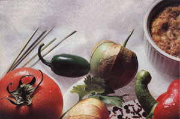

Kitchen Garden
If Erik has his way, his "Erik's All-Purpose Wonder Sauce Delight" will one day tease the tongue of every U.S. diner, eventually replacing ketchup in the hearts of Americans. At this stage, however, Sauce Delight is still an ever-varying, liquid-fire concoction that, according to its creator, will "cure warts, impress girls and turn scrambled eggs a delectable shade !'brown."
Erik, in case you're wondering, is that 10-year-old son of mine who raids garden plots and spice shelves (instead of cookie jars) in his ongoing efforts to create his own line of kitchen condiments. His results to date, however, have been eye-watering formulations that only a half-starved dragon could love. Chancing all recipes to memory and bravely swallowing all failures with only a wince, Erik concedes that it may be a while before he conjures up just the right mix.
But until the ultimate version of Sauce Delight arrives, the rest of us can practice a little magic of our own, because garden-fresh condiments are easy to create: They'll perk up everyday menus and put to good use some of those armloads of tomatoes, baskets of peppers and sacks of basil, as well as the horseradish and mustard plants that grow quietly in the corner. Here are some recipes (several from some experienced kitch en wizards in our region) to get you off to a good start.
Ketchup
My friend Yung Li moved quickly from wok to wok, creating enticing dishes for her family restaurant, while I chatted and enjoyed the behind-the-scenes aromas. She tossed in some green onions here, some shrimp there, and a dollop of ketchup into two entrees. Ketchup? Too shocked to speak, I was absolutely appalled that she would stoop to using the all-American hamburger condiment in Oriental cuisine. I'm glad now that I kept quiet, because I've since learned that ketchup originated in the Far East and that the tomato version is only one of many varieties of this sauce, including mushroom, gooseberry and, the British favorite, walnut ketchup.
Homemade ketchup has two virtues: It uses up a lot of surplus tomatoes (a halfbushel cooks down to less than four quarts of sauce) and, more importantly, it offers a rich, sharp, alive flavor that's unknown in store-bought ketchup. To put it another way, there's a difference as noticeable as that between gourmet mustard and an all-purpose brand, or even between a fresh garden tomato and a midwinter import.
I have one caution, though, for first-time ketchup chefs: Don't judge the taste of the final sauce by its smell when cooking. Ketchup recipes call for a lot of vinegar, and its scent may seem overpowering in a fresh batch. However, after the sauce has been bottled and aged for a few weeks, the vinegar loses some of its bite, allowing all of the flavors to blend into a tantalizing sweetand-sour surprise.
Since I'd rather not spend time cooking tomatoes just to make a few pints of ketchup, the following two recipes of mine call for previously canned tomato sauce.
Sweet Ketchup
2 quarts thick homemade tomato sauce
2 ripe sweet red peppers, finely chopped
1 sweet green pepper, finely chopped
2 medium onions, finely chopped
2 cups sugar or honey
3 tablespoons salt
3 cups cider vinegar
Tie in a cheesecloth bag:
1 1/2 teaspoons whole allspice
1 1/2 teaspoons whole cloves
1 stick cinnamon, broken in several pieces
Simmer all ingredients except vinegar in a large pot, stirring often, until thick (2-4 hours). Add vinegar, and cook for 15 minutes more. Remove spices, and ladle sauce into clean, hot pint jars. Adjust lids, and process in a boiling-water bath for 10 minutes. Makes approximately 5 pints.
Spicy Ketchup
2 quarts tomato sauce
2 medium onions, finely chopped
1 clove garlic, sliced
1/2 cup brown sugar
3/4 teaspoon powdered allspice
1 teaspoon pepper
3/4 teaspoon ground cloves
3/4 teaspoon celery salt
1/2 tablespoon salt
2 dashes Tabasco sauce
1/4 red pepper, minced (optional)
1/2 cup vinegar
Simmer all ingredients, uncovered, until thick (about 3 hours). Follow above directions for processing. Makes 3-4 pints.
Mustard
Mustard was originally concocted in order to mask the undesirable flavors of spoiled meats or poor-tasting foods. These days, however, it's a bona fide gourmet treat available in a wide assortment of varieties: yellow ballpark, deli-style, Oriental, Dijon and grainy, as well as a world of such exotic-sounding flavors as strawberry, horseradish and champagne.
The basic ingredients of this spicy condiment are crushed or ground mustard seeds mixed with a liquid (traditionally wine and/or vinegar). White or yellow seeds are the mildest, black or dark burgundy seeds are much spicier, and brown seeds are the hottest of all.
Mustard is almost a sow-and-forget crop. Plant seeds in the spring around the last frost date, then thin the seedlings to stand two feet apart in rows or raised-bed plantings. Water and weed the plants as needed. When the leaves and seedpods turn brown, harvest whole plants and set them aside in a sheltered place to dry further. Once the dehydration process is complete, place the plants inside a paper or plastic bag, rub the seeds free of the heads, then sift them through a fine colander or winnow them in front of a fan or in a stiff breeze.
The seeds themselves have little bite until crushed and moistened, which activates an enzyme called myrosin. Let your homemade batches sit at least a half hour to lessen the initial intensity. For a smooth mustard (which, admittedly, will be a little difficult to make at home), you'll have to grind the seeds to a fine powder in a grain grinder or coffee mill, but grainy mustard can be made in a blender. Johnny's Selected Seeds (Foss Hill Rd., Albion, ME 04910) sells both yellow and brown varieties and offers a selection of tips and recipes.
Johnny's Grainy Spicy Mustard
2/3 cup dry white wine
1/3 cup cider vinegar
1 tablespoon honey
1 teaspoon salt (or to taste)
Tie in a cheesecloth bag:
2 tablespoons mixed dry whole spices (use pickling spice or your own combination. Possibilities include peppercorns, star anise, fennel, caraway or dill seeds, cinnamon, lemon grass and bay leaves)
1/4 cup brown mustard seed
1/4 cup yellow mustard seed
Simmer everything except mustard seeds with '/2 cup water in a covered saucepan for 5 minutes. Remove spices and add mustard to liquid. Let steep 1 hour. Transfer to blender and grind until thick. Add a bit more water gradually, blending until reasonably smooth but still thick. Thin, if necessary, with additional wine or water after mustard is cool.
Salsa Cruda, Salsa Verde
Each spring, David Schoonmaker (one of MOTHER'S senior editors) and his wife, Nancy, host a Mexican cinco de mayo potluck at their home. To look at this fair-haired family you wouldn't guess that it's boiling over with Mexican mania. Yet they cook, eat and even wax historical on almost any south-of-the-border dish you can think of. Therefore, when they moved to North Carolina and Nancy could no longer find some key Mexican cuisine ingredients, like cilantro and chilies, that she took for granted when living in the West, she started growing her own.
Cilantro, the ephemeral but essential herb of good salsa, is tasty only if used fresh, but fortunately it's a cinch to grow.
Spring and fall are the optimum cilantro growing seasons, since hot weather causes it to bolt. (If you must have this seasoning in summer, grow it in a shaded area.) Poor soil is no problem, as it's said the herb has a stronger flavor if denied the niceties of fertile ground. Mexican parsley, as this plant is sometimes called, has a quick first stage of foliage, which is what you'll want to harvest. The second growth of leaves is more dill-like in appearance and signals the coming seed head. Sow the seed 1/2 inch deep and four to six inches apart every three or four weeks for a steady supply, and keep the soil moist until the plants get a foothold, with frequent waterings and a shade covering if needed.
Nancy's still looking for a salsa that really stands up to canning, but here are two to enjoy fresh during summer's season of bounty. Salsas are famous as chip dips, but can also be spooned over cooked vegetables, eggs, meats and salads.
Salsa Cruda (Raw Tomato Salsa)
4 large ripe tomatoes
1/2 green pepper
1 small stalk celery
1 medium onion
2 hot green chilies
2 tablespoons red wine vinegar
3 tablespoons olive oil
1 tablespoon sugar
Salt and pepper to taste
1 teaspoon basil
1 teaspoon- tablespoon cilantro leaves
I highly recommend using a food processor instead of a blender for salsa. First, run all the vegetables through except tomatoes. Put these in last, and pulse until the mix is the texture of chunky pea soup. Don't overblend. Pour into a bowl, and add the remaining ingredients. Mix well, and let sit for 1-3 hours to blend flavors. If you can't locate a processor, chop all vegetables into small pieces, and blend by hand in a serving bowl.
Salsa Verde
(Uncooked Tomatillo Sauce)
1 pound fresh tomatilloes (approximately 20)
1 large clove garlic
2 hot green chilies
1/2 small red onion
1 tablespoon cilantro leaves
Sugar, salt and red wine vinegar to taste
Toast tomatilloes in their husks for 20 minutes or so in a heavy frying pan over medium heat, turning often. Remove husks. (As an option, you can simply remove the husks from uncooked tomatilloes, and then boil them until just tender.) Process as for Salsa Cruda above, reserving the tomatilloes until last.
The mystery ingredient in this salsa verde is tomatilloes, which are hard to find at the local chain grocery store but, again, little trouble to grow.
Tomatilloes require at least 10 weeks of warm weather to mature, so if your season is short or you simply want to give them a good head start, plant the seeds indoors six to eight weeks before the danger of frost is past. Set out seedlings to stand about a foot apart (or thin those sown outdoors). Don't bother to stake them; just let the plants fall over and rest on the ground. Soon they'll again be growing upright. In the meantime, they make a good ground cover that will con serve the moisture the walnut-sized green fruits will need. Controlling weeds and watering when necessary is about all you have to do until harvest. Some growers recommend waiting until the lanternlike husk that surrounds the tomatillo is dry and brown, but I've found that many of the fruits will then be yellow and past their prime. Therefore, harvest the fruits when still green, but after they seem to have attained their maximum size.
Pesto
Like mother, like son: I once threw beer, pesto, peanuts and a tough old bird into a casserole that was poetically dubbed "Old Rooster Delight." By sheer luck, it won raves, but lives on only in memories because I forgot to write down the recipe. I can tell you how I make pesto though-the same way, by the seat of my pants. I look at a basic recipe, like the one below, then alter it according to my mood and the ingredients in my kitchen.
Basil, its main ingredient, is certainly one of the easiest and most abundant herbs to cultivate. Where some herbs have skinny leaves and seem perpetually pondering whether to grow or not, basil bursts out of the soil with fat fronds that keep on producing as you keep on picking.
I use this abundant foliage by packing my blender with pesto essentials-basil, oil and garlic-until the blades barely turn. Pine nuts and cheese-if I have them on hand-are also added; if not, the pesto is still great.
Basic Pesto
1-1 1/2 cups olive oil
3-6 cloves garlic
1/2 cup pine nuts
1-1 1/2 cups grated Parmesan cheese
3 cups fresh basil leaves
Whisk all ingredients except basil briefly in a blender. Add basil a bit at a time until the entire mixture has a creamy consistency. Put in small jars (I use jelly jars), top with a 1/4-inch layer of olive oil, and freeze all but one to refrigerate for immediate use.
Once you taste pesto, you'll think of a thousand ways to use it: in soups, in tomato sauces of any kind, on vegetables, adding a touch to potato salad, with butter on pasta or potatoes-even in old-rooster casseroles.
Horseradish
Mike Mee, obviously a horseradish lover, wrote us about his favorite pungent root:
"Hard-core horseradish devotees-those who insist that it produce a mighty sensation in the Eustachian tubes-should consider preparing their own. Besides, a muttered `he grows his own horseradish, you know' can make a gardener the center of attention for an entire afternoon cookout. And there's no need for the star to let on how easy horseradish is to grow."
Acquire some sets or cuttings of this perennial from a friend or a seed company. Plant them about two inches deep in the fall or after the last hard spring frost, and then ignore them. When the foliage withers with the first hard autumn frost, dig as many roots as you think you'll need. (You can make a big batch of horseradish sauce all at once, or-in milder climates-dig roots throughout the fall or winter as needed.)
Wash and peel the roots as you would carrots, and cut them into pieces. (Keeping them immersed in water will help control their pungent, overpowering odor.) Have ready a quart of white vinegar, an assortment of small bottles and a spoon. Next, summon every ounce of fortitude you can muster, remembering that blenderizing horseradish is a job best done alone. (It is, in fact, an excellent way to clear the house of unwanted guests). It's also wise to cover your mouth and nose with a wet bandanna. (Some blender operators even resort to goggles, since the process can approximate a nonlethal version of chemical warfare. Imagining our ancestors doing the job by hand brings new respect for their fortitude and resolve.) Spoon the mash into the bottles, add white vinegar to cover and a dash of salt, if desired, to aid preservation. Keep refrigerated, and use as you see fit. (I don't dare advise anyone on how to use horseradish!)
You can start with the recipes above, but by no means feel limited by them. Just recall what it was like to be 10 years old, when your imagination and desire to experiment had no boundaries and your taste buds were willing guinea pig.
Susan Sides is head research gardener for Mother Earth News.
|
 |
|
|